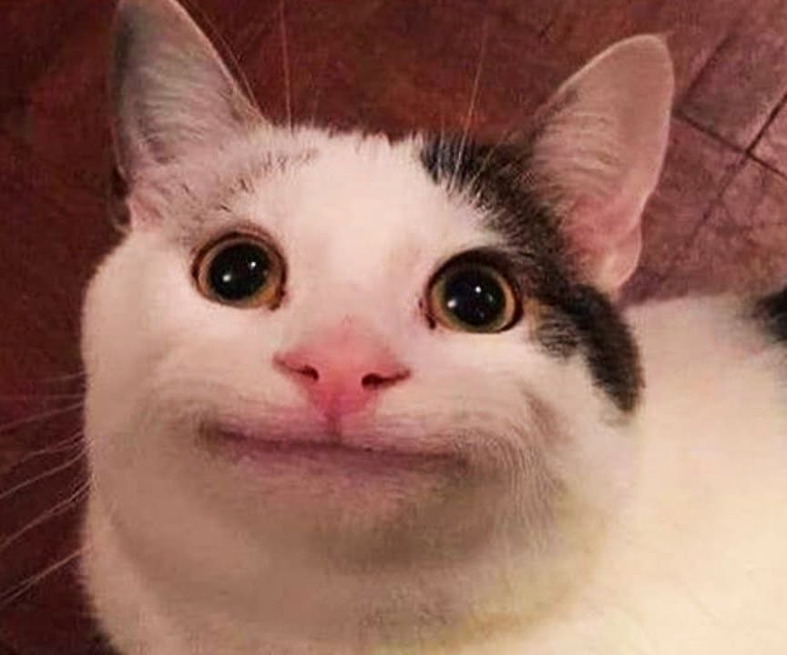
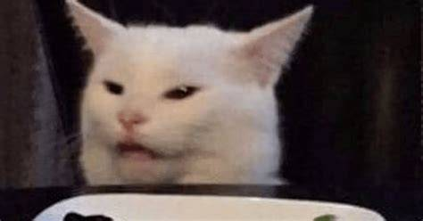

🐱 Gato Boca Fechada

O Gato Boca Fechada é o verdadeiro mestre do mistério. Sempre com uma expressão de quem está julgando
o mundo silenciosamente, ele observa tudo com um olhar calmo e analítico. Nada passa despercebido!
Enquanto outros gatos correm atrás de brinquedos ou caçam sombras, este gato prefere o conforto do sofá
e o som da geladeira abrindo. Ele acredita firmemente que o silêncio é a melhor resposta para os humanos
que insistem em chamá-lo de “fofinho”.
Seu olhar sereno e postura imponente fazem dele um símbolo da paz interior felina — mas não se engane!
Atrás dessa calma aparente existe um estrategista nato, capaz de planejar com precisão o momento exato
de roubar o último pedaço de frango do prato.
| Qualidades | Defeitos |
|---|---|
| Calmo e observador | Difícil de decifrar |
| Elegante e imponente | Ignora ordens humanas com maestria |
😹 Gato Boca Aberta

O Gato Boca Aberta é o oposto completo de seu colega reservado. Ele vive em estado constante de surpresa!
Cada barulho novo, cada movimento inesperado, é motivo para abrir a boca e fazer a cara mais engraçada
possível. É o tipo de gato que transforma qualquer situação em um meme — e, sinceramente, ele sabe disso.
Dizem que sua expressão icônica surgiu no exato momento em que descobriu que sua ração era “sem sabor de frango”.
Desde então, ele se tornou uma lenda: o gato mais expressivo da internet, símbolo da confusão e do drama felino.
Apesar do olhar assustado, ele é um amor de gato — curioso, brincalhão e com uma habilidade única de fazer
qualquer um rir apenas com um olhar.
| Qualidades | Defeitos |
|---|---|
| Extremamente expressivo | Exagera em tudo o que sente |
| Divertido e espontâneo | Assusta outros gatos com suas caretas |